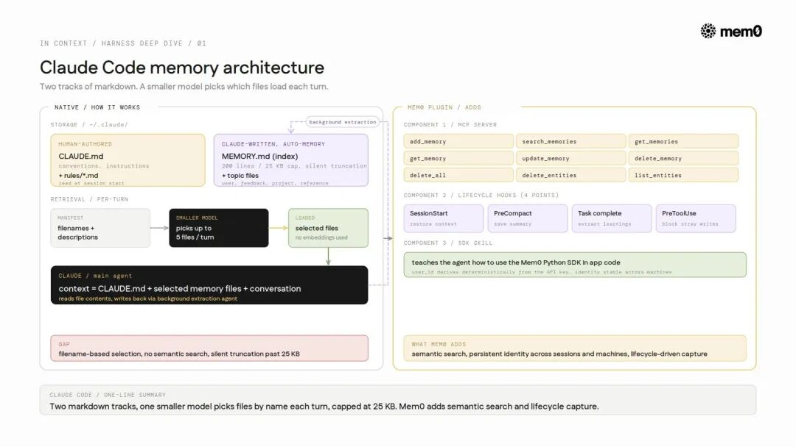
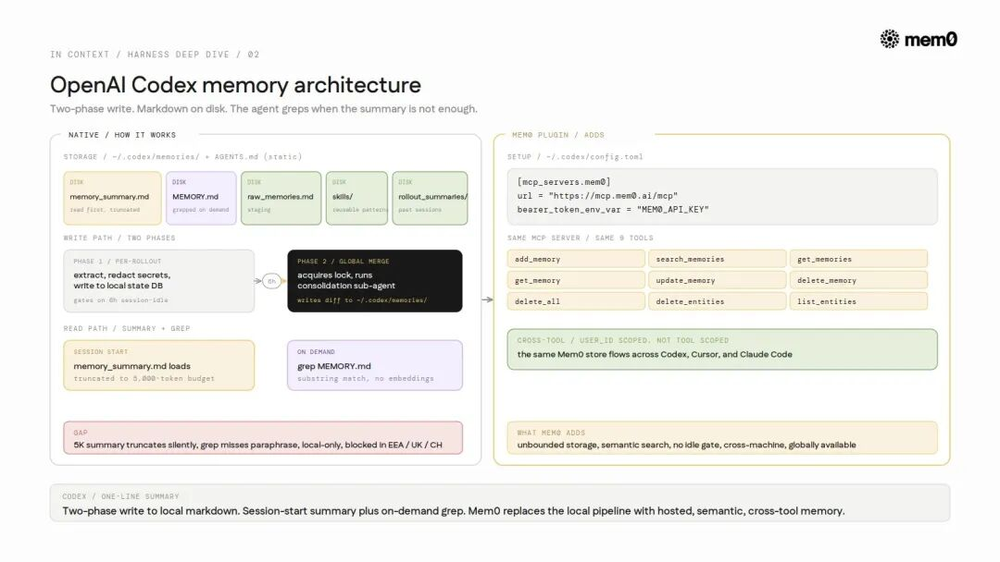
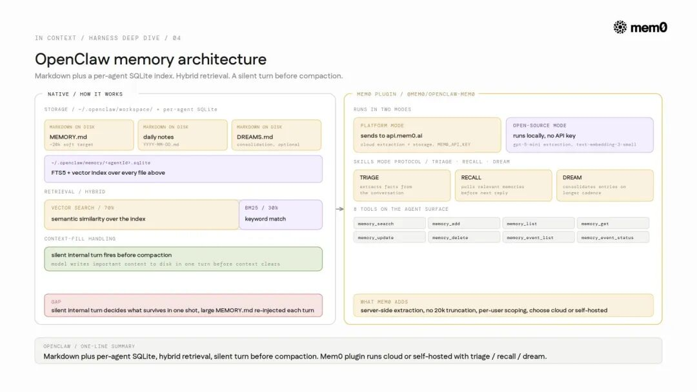
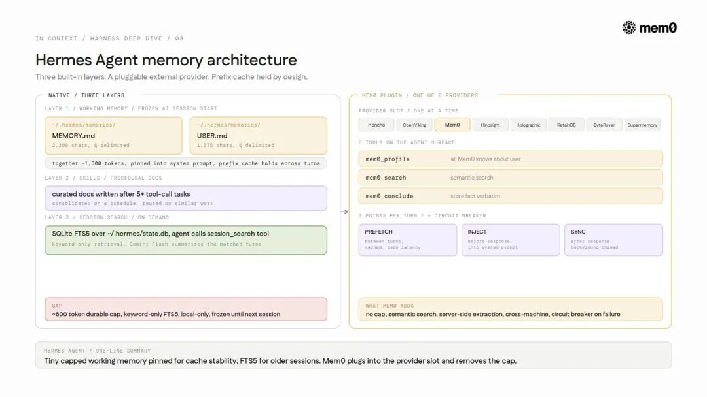
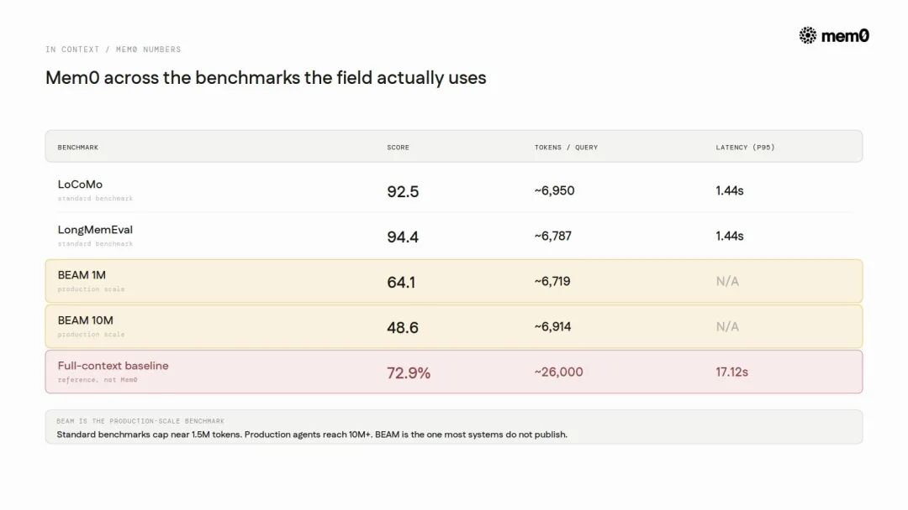

9大Harness的记忆能力对比
导读
这篇文章有意思的地方，不在于又讲了一遍“AI Agent 需要记忆”。这事大家都知道。真正麻烦的是，当 Agent 开始真的写代码、调工具、跨会话工作以后，记忆到底放在哪、谁来检索、什么时候过期、怎么防止串用户。
Mem0 这篇 X Article 把 Claude Code、Codex、OpenClaw、Hermes、Copilot、Devin、Windsurf、AWS AgentCore 等几个常见 Agent Harness 拉到一张桌上对比。它当然带有 Mem0 自己的产品视角，但里面对“记忆为什么正在从功能变成基础设施”的判断，值得开发者认真看一眼。
Agent Harness，可以理解为 AI 软件真正跑起来的“运行壳”。Claude Code、Codex、Cursor 这类环境，不只是把模型接进来聊天，它们还负责上下文管理、工具编排、多 Agent 协作，以及越来越关键的记忆管理。
问题就在这，真正交付软件的东西，越来越不只是模型，而是这个 Harness。
记忆正是 Harness 设计里最难的地方。它应该放在哪里？一次会话结束后，什么东西应该留下？窗口被塞满以后，哪些信息应该被压缩、保留或丢掉？这些问题还没有统一答案，所以每个主流 Harness 都在用自己的方式试。
Agent 记忆到底是什么
很多系统都说自己有 memory，但这里至少有三类完全不同的东西。混在一起讲，很容易把问题讲糊。
- 工作记忆（Working memory）：会话期间留在上下文窗口里的内容。会话结束通常就没了。上下文压缩，也就是窗口满了以后什么能活下来，属于这一层的问题。
- 外部记忆（External memory）：存在模型权重之外的内容，比如向量数据库、知识图谱、文件。它能跨会话保留，但模型权重本身不变。到 2026 年，生产环境里的记忆基本都在这一层。
- 参数记忆（Parametric memory）：通过梯度下降写进模型权重里的知识。它不是检索例子，而是把规则泛化出来。但原文判断，2026 年还没有真正的生产部署。
认知科学里常说的语义记忆、情景记忆、程序性记忆，描述的是“存什么”。上面这三层讲的是“存在哪里”。这两个维度别混。
文章引用了论文《Contextual Agentic Memory is a Memo, Not True Memory》里面有一个很锋利的结论：如果想让检索式记忆达到参数记忆的效果，可能需要 Ω(k²) 规模的存储样本，而参数记忆只需要 O(d) 的权重更新。下面这些系统，基本都还活在这个天花板下面。
主流 Harness 都交付了什么
九个 Harness 的记忆能力对比
1. Claude Code
Claude Code 走了两条线。
CLAUDE.md 是人写的配置，通常放项目约定、指令和开发偏好，会在会话开始时读取。Auto-memory 则是 Claude 通过后台提取 Agent 写出来的笔记，存放在 ~/.claude/projects/<repo>/memory/ 下，围绕一个 MEMORY.md 索引组织。这个索引有上限，200 行或 25KB，内容分成 user、feedback、project、reference 四类。
限制主要来自检索方式。每一轮里，Claude Code 会把文件名和描述交给一个更小的模型，由它决定加载哪些文件。没有 embedding，最多加载 5 个文件，超过上限还可能静默截断。也就是说，一个名字看起来相关的文件，可能打败真正相关的文件。

Claude Code 记忆架构
短板：它按文件名选择，不是语义搜索。团队共享能力藏在 TEAMMEM 标志后面，但底层仍然是本地、仓库级 Markdown，没有语义索引。
2. Anthropic Managed Agents
Managed Agents 是 Anthropic 的托管 Agent 运行时，不是 Claude Code 那种本地产品。它的会话是一个只追加不修改的事件日志，所以回滚和审计是架构内生的，不是后面补的。
记忆存储以文件系统形式挂载到 /mnt/memory/，每个 workspace 最多 8 个 store，每个大约 100KB。每次写入都是不可变版本，多个 Agent 可以共享同一个 store，并留下可审计历史。
短板：它更适合 workspace 级别的多 Agent 协调，而不是长期个人记忆。100KB 上限和 workspace 作用域意味着，跨会话个人上下文还得在上层再搭一套模式。
3. OpenAI Codex
Codex 的记忆是一组 Markdown 目录，位置在 ~/.codex/memories/，没有 SQLite，也没有 embeddings。memory_summary.md 会先读，MEMORY.md 按需用 grep 查，旁边还有 raw_memories.md、skills/、rollout_summaries/。功能默认关闭，需要 features.memories 开关。
它的写入路径分两段。
第一段是每个 rollout 自己做。会话空闲 6 小时后，Codex 按严格 schema 抽取记忆、脱敏密钥，然后写到本地状态数据库，还不是写进记忆目录。
第二段是全局合并。系统拿锁后启动一个 consolidation 子 Agent，决定合并、打补丁或丢弃，再把 diff 写进去。这个流程有边界，最多 256 个 rollouts，会按 30 天剪枝，也会考虑限流。
读取路径则不是语义检索。summary 会被截到固定 5,000 token 预算，其他内容靠 grep 从 MEMORY.md 里找。

Codex 记忆架构
短板：5,000 token summary 会静默截断；grep 只能匹配子串，改写过的事实可能完全找不到；6 小时空闲门槛让连续会话很难及时合并；状态是本地的；发布初期 EEA、英国和瑞士不可用。
4. GitHub Copilot
Copilot 最有辨识度的动作，是 即时引用校验（just-in-time citation verification）。
它的记忆项不是一段泛泛文本，而是结构化对象：subject、事实内容、文件与行号引用、reasoning。使用之前，Agent 会拿当前分支校验引用。如果代码已经和记忆冲突，它会重写这条记忆。记忆还会在 28 天后自动过期。
这也是少数公开了真实生产效果的数据：A/B 测试里，开启记忆后 PR 合并率从 83% 提升到 90%，代码审查 precision 提升 3%，recall 提升 4%。在编码 Agent 记忆这块，这个 7 个百分点的提升是少见的真实世界指标，其他系统更多还停在 benchmark。
短板：这种引用 schema 很难容纳没有明确代码锚点的偏好事实，比如“偏好少抽象”。另外，它严格限定在 repo 作用域里。
5. OpenClaw
OpenClaw 的原生记忆比看起来更强。它在 ~/.openclaw/workspace 里存 Markdown，包括维护过的 MEMORY.md 和按日期记录的 daily logs。底层还有每个 Agent 独立的 SQLite 索引，带 embeddings 和混合检索，70% 向量、30% BM25。所以它原生就有语义搜索。

OpenClaw 记忆架构
麻烦在于什么东西能留下。当窗口满了，OpenClaw 会触发一次“静默内部回合”，让模型在清空前把重要内容写到磁盘。写进去什么，取决于模型那一轮的判断。长期记忆因此会选择性强、稳定性不一致。
Mem0 插件 @mem0/openclaw-mem0 想解决的就是这个依赖。Auto-Recall 在每轮前注入相关记忆，Auto-Capture 在每轮后持久化交流内容，新事实会存起来，旧事实会更新，重复内容会合并，并通过 session run_id 和长期 userId 管作用域。
文章认为，OpenClaw 24.7 万 star 的采用，很大一部分就是被这个缺口推动的。
6. Hermes Agent
Hermes 有 13.5 万 star、200 多个模型，内置三层记忆，又支持 8 个可插拔 provider。
第一层是工作记忆：MEMORY.md 约 2,200 字符，USER.md 约 1,375 字符，加起来约 1,300 token。内容用 § 分隔，有利用率指示，并在容量到 80% 时做 consolidation。写入会落盘，但系统 prompt 会拿到一个冻结快照直到下一次会话，以保住 prefix cache。
第二层是 skills：5 次以上工具调用任务后写成程序性文档，并按计划维护。
第三层是 session search：用 SQLite FTS5 对所有会话做全文检索，并按需总结。

Hermes Agent 记忆架构
短板：持久记忆上限很小，约 800 token。FTS5 是关键词检索，“429 errors” 不会匹配 “rate limiting”。状态也是本地的。正因为如此，Hermes 留了 provider 插槽。接 Mem0 后，上限、语义检索、服务端抽取和 MEM0_USER_ID 作用域都可以由外部系统接管；即使服务挂了，还有 circuit breaker 让内置层继续工作。
7. AWS Bedrock AgentCore
AgentCore 是 AWS 的托管 Agent 平台。它的 Runtime 是 Harness 层，可以类比 Anthropic Managed Agents；Memory 是托管记忆服务。
Memory 有三种异步抽取策略：语义事实、偏好、叙事总结。抽取大约 20 到 40 秒，检索约 200ms。发生变化的事实不会直接删除，而是标记为 INVALID，这样可以保留 lineage。
公开指标包括 LoCoMo 70.58、PrefEval 79、PolyBench-QA 83.02。
短板：它是 AWS 特定生态，有锁定问题；公开的 LoCoMo 分数也低于领先的记忆系统。
8. Windsurf
Windsurf 的记忆由 Cascade 引擎自动生成和管理，开发者没有太多工作流可控。记忆以本地、workspace 级文件形式存放在 ~/.codeium/windsurf/memories/，主要捕捉代码库模式和约定。
短板：捕捉什么由 Cascade 决定，不是开发者决定。记忆限定在 workspace 里，跨项目不可见，也没有跨设备或团队共享。
9. Cognition Devin
Devin 把记忆分成两块。
Knowledge 是人工维护的 trigger-content 事实，不自动捕获。DeepWiki 是参考文档，上限是 30 页、100 条 notes，每条 10,000 字符。Devin 会在会话后建议新增 Knowledge，但必须人类批准后才会存进去。
短板：人工审批能保证质量，但也带来摩擦。团队如果不审核，就什么都沉淀不下来。限制也不算高，而且 Knowledge 是给 Devin 用的，不会迁移到其他工具。
记忆 Benchmark 本身也很薄
文章对现有 benchmark 的批评很直接：多数测试还停留在“能不能从过去对话里回忆事实”。它们接近饱和，而且高分不一定代表 Agent 会做出更好决策。
LoCoMo 被点名批评得最重。它只有 10 段对话，比较不稳定；不少问题不需要真正记忆，一个简单 grep baseline 也能到约 74%；对抗问题还常常和目标有表面相似性，模型可能靠 pattern matching 过关。
LongMemEval 相对还算能用。它有 500 个 curated questions，覆盖信息抽取、多会话推理、时间推理、知识更新和拒答，规模扩到约 150 万 token。但它仍然偏 recall。
更深的问题是，很多 benchmark 根本不测“记忆是否能指导行动”。MemoryArena（arXiv:2602.16313）就显示，一些在 LoCoMo 和 LongMemEval 接近饱和的系统，到了行动场景会失败。Anatomy of Agentic Memory（arXiv:2602.19320）也把这个批评形式化了：这些榜单测的是相似度，不是任务效用。
还有生产规模。标准 benchmark 多数卡在 150 万 token 左右，但生产 Agent 很快会累积到 1,000 万 token 以上。BEAM（ICLR 2026）是少数为这个范围设计的 benchmark。比较诚实的结论是，记忆领域还需要新的 benchmark，现有 leaderboard 要谨慎看，下面这些分数也一样。
研究显示还有哪些没解决
稳定性与可塑性困境只是换了地方。 把记忆挪到外部，并没有结束灾难性遗忘。《When Continual Learning Moves to Memory》显示，新旧记忆会争夺检索槽位，就像以前争夺权重一样。来自简单任务的原始轨迹，甚至会伤害更难任务，forward transfer 为 -9.5%。
选择性遗忘还没解决。 MemoryAgentBench（arXiv:2507.05257）定义了四种能力。系统能处理检索，但还很难做到选择性遗忘，也就是忘掉一个过期事实，同时保留围绕它的结构。
记忆也是攻击面。 《No Attacker Needed》（arXiv:2604.01350）测到正常使用下 57% 到 71% 的跨用户污染。记忆投毒攻击成功率则在 6% 到 38% 之间（arXiv:2601.05504）。
短板里反复出现的模式
这些系统的短板其实很像。
存储常常是有上限且本地化的，比如 Claude Code 25KB、Hermes 2,200 字符、Codex 5,000 token 加载预算。
检索大多还是关键词式的，比如 Claude Code 按文件名，Codex 用 grep，Hermes 用 FTS5。少数有语义搜索的系统，要么仍受本地和压缩限制，比如 OpenClaw；要么锁在云服务生态里，比如 AgentCore。
记忆还普遍是 Harness 作用域。Claude Code 的记忆，对 Codex 来说没有意义。过期处理很弱，除了 Copilot 之外很少有系统认真处理 stale memory。隔离也经常是事后才想起来，所以才会出现前面提到的污染数字。
这就是 Harness 边界的限制。
Mem0 的位置
Mem0 针对的就是这个边界之外的问题。它的架构是混合式的：向量存储负责语义检索，知识图谱负责关系推理，key-value 负责快速元数据。
v3 算法在 2026 年 4 月改成了单次 ADD-only 抽取、多信号检索，也就是语义、BM25、实体链接一轮完成，并把实体链接放进向量存储里，移除了 v2 的外部图数据库。

Mem0 记忆算法
文章给出的数据是，Mem0 每次查询约 6,900 token、1.44 秒；full-context retrieval 则约 26,000 token、17.12 秒。
对应前面那些短板，Mem0 的卖点是：没有固定上限的外部 store；多信号检索，能找回上个月关于 auth endpoint 的讨论，即使说法已经变了；按身份隔离的 memory namespace，避免一个用户的记忆泄漏到另一个用户那里。
它也不只是理论。文章提到 Mem0 已经覆盖上面这些 Harness，包括 Claude Code 插件、Codex MCP server、Hermes 和 OpenClaw provider、AWS Strands 原生集成，以及 21 个 framework 和 20 个 vector store。
换句话说，记忆正在从每个 Harness 里的小功能，变成一层基础设施。
现在走到哪了
记忆已经变成基础设施。主流 Harness 都开始交付它，因为一个 Agent 如果只在单次会话里聪明，跨会话就失忆，那它的能力边界会非常明显。
这些 Harness 原生实现已经有进步，但它们常常在同一条边界上断掉：本地且有上限的存储、关键词检索、Harness 作用域、薄弱的 stale memory 处理，以及隔离缺口。
用来衡量它们的 benchmark 本身也不够强。真正接近生产规模的 BEAM，恰恰是很多系统还没报告的。
整体看，Mem0 想补的是一层可移植、语义可检索、跨 Agent、能扛住生产 token 规模的记忆基础设施。
Mem0 是一个面向 LLM 和 AI Agent 的开源智能记忆层，目标是提供长期、个性化、具备上下文感知的跨会话交互。
- 开源仓库：github.com/mem0ai/mem0
原文：https://x.com/mem0ai/status/2061822612398014782?s=20